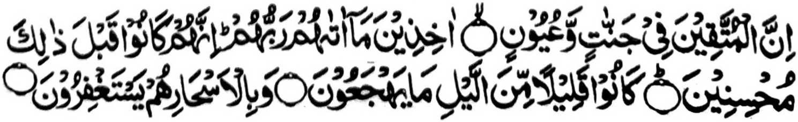

“Mata-an! A so miyamananggila na si-i ko manga Sorga go manga bowalan. A tatarima-an niran so inibegay kiran o Kadnan niran. Mata-an! a siran na aya betad iran ko ona-an noto na miphiya-piya siran. Aya betad iran na maito ko kagagawi-i a ipephakatorog iron, go si-i ko kapekhalibabas iyan na siran na pephangeni siran sa ma-ap.” (Surah Adh-Dhariyat: 15-18)